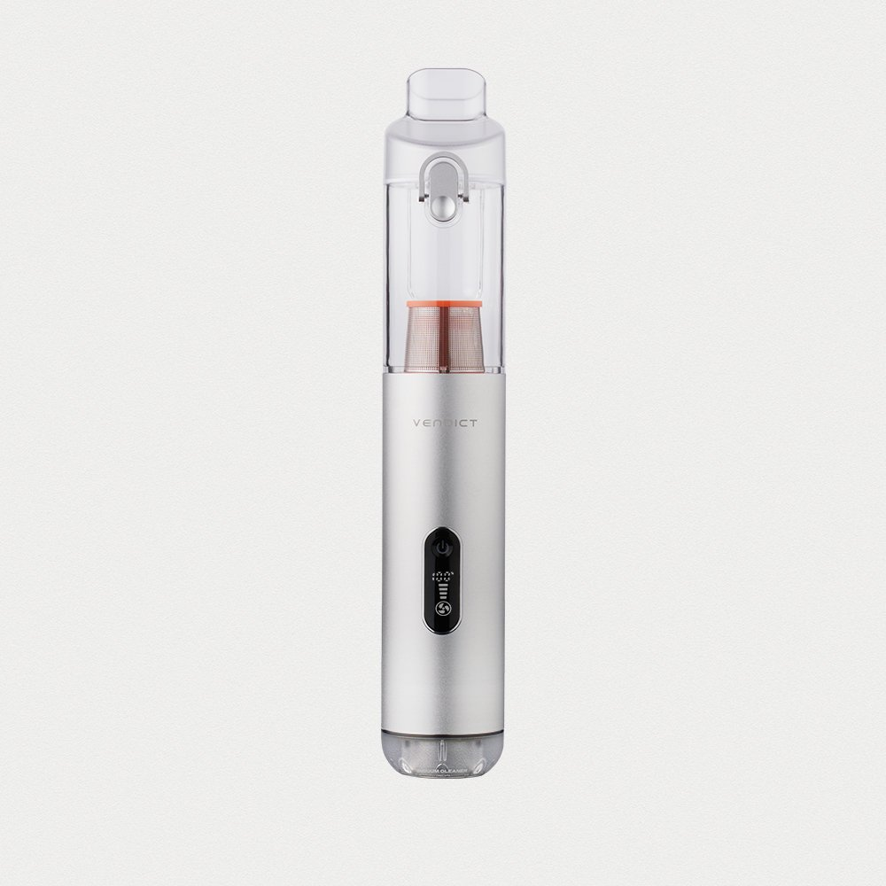
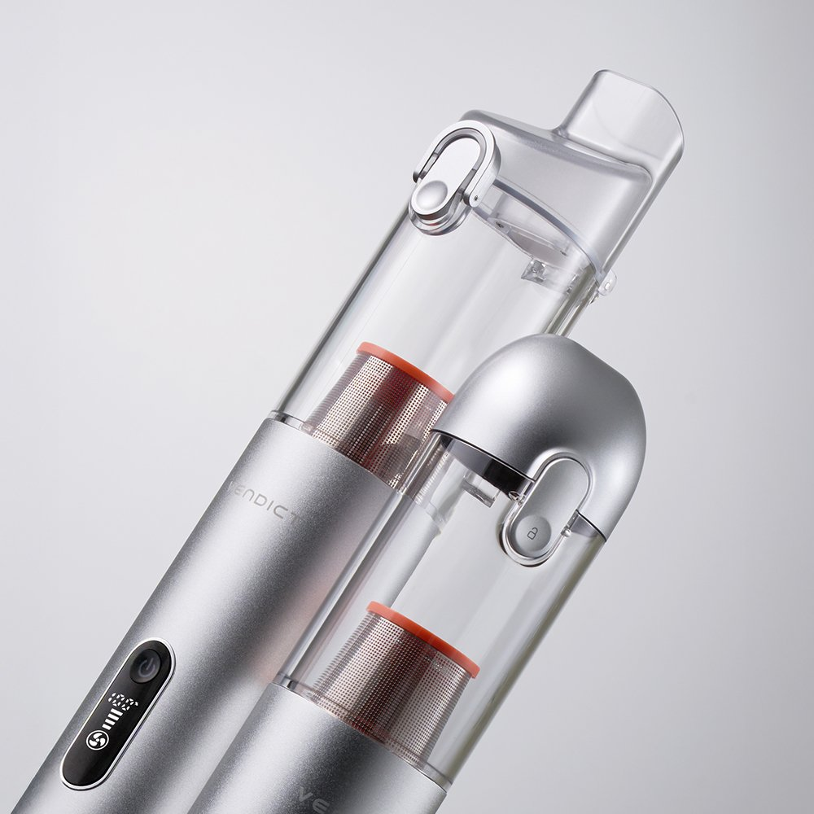
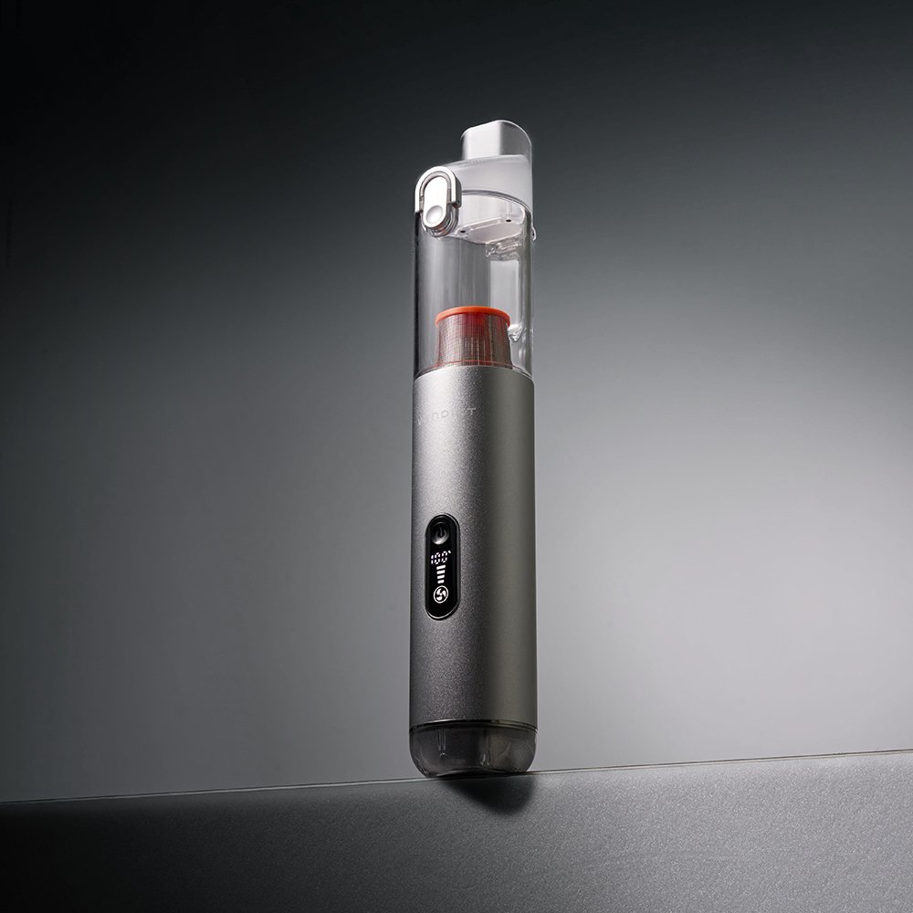
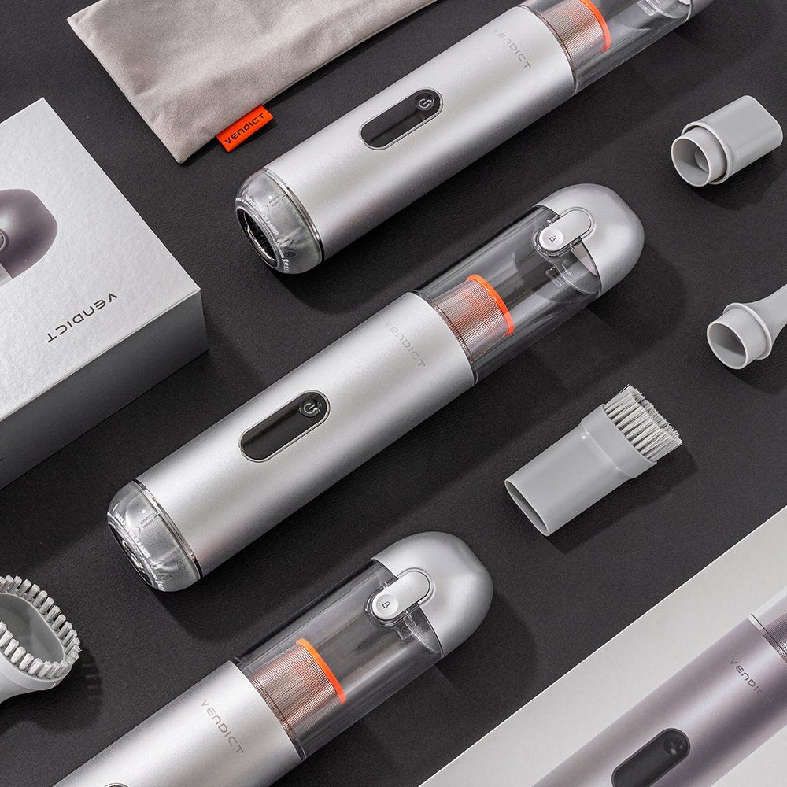

Why a Slim Cordless Vacuum Lives in So Many Korean Cars
Self car washes are popular in Korea, and many drivers keep a small vacuum in the trunk for in-between clean-ups. The Bendict Dust Pick (벤딕트 더스트픽) is a cordless handheld car vacuum from Korean brand Bendict, sold through its official store in a silver "Silver Lining Pure" finish.

The Dust Pick in its silver finish.

A slim body that fits in one hand.
What It Does Well
- Cordless: No cord to drag around the car, so you can reach the front seats, back seats and trunk freely.
- Slim nozzle: Reaches cup holders and the gaps between seats, where dust and crumbs collect.
- Picks up grit: Korean users say most of the sand stuck in floor mats and the dust in seat gaps came up in one pass.
- Semi-permanent filter: You don't need to replace the filter often, so upkeep is simple.
- Light to hold: Users describe the weight as easy to handle.

A close-up of the nozzle and the clear dust bin.

The display panel on the body.

The vacuum with its accessories laid out.
Quick Specs
| Attribute | Bendict Dust Pick Detail |
|---|---|
| Brand | Bendict (Republic of Korea) |
| Model | Dust Pick car vacuum, Silver Lining Pure |
| Type | Cordless handheld vacuum |
| Nozzle | Slim nozzle for cup holders and seat gaps |
| Filter | Semi-permanent |
| Best For | Quick car clean-ups between washes |
We don't list suction power, battery or weight figures because we could not confirm official numbers. Check the seller's listing for exact specs.
Pros & Cons
✅ Pros
- Cordless and slim, so it reaches tight spots in the car.
- Handles sand in floor mats and dust in seat gaps.
- A semi-permanent filter keeps upkeep low.
- Clean silver design with a set of accessories.
⚠️ Cons
- The Korean model may not be sold in the US. The Amazon link below searches similar slim cordless car vacuums.
- We could not confirm official suction or battery figures.
🛒 Similar Slim Car Vacuums on Amazon
Editor Rating: 4.6 / 5.0 ★★★★☆
Slim Cordless Handheld Car Vacuum (Bendict Dust Pick Alternative)
Cordless · Slim nozzle · Reusable filter · Car-friendly size